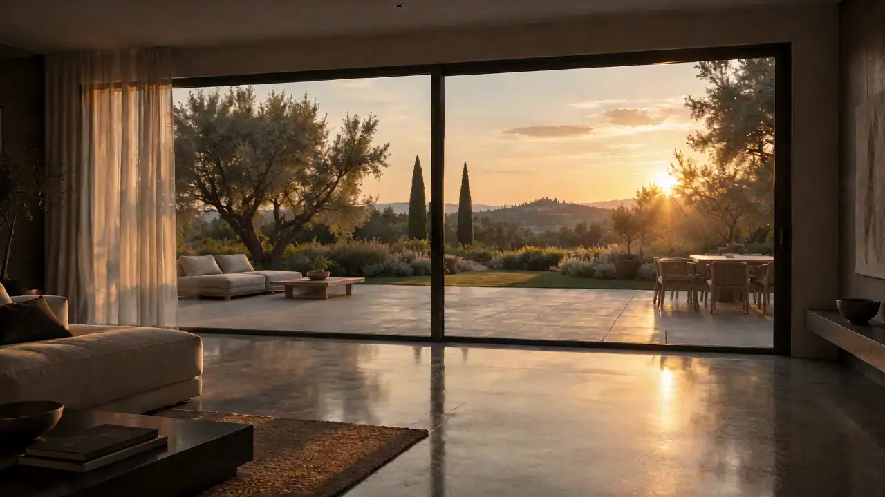
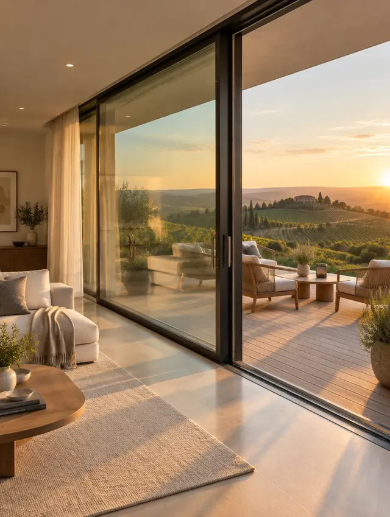
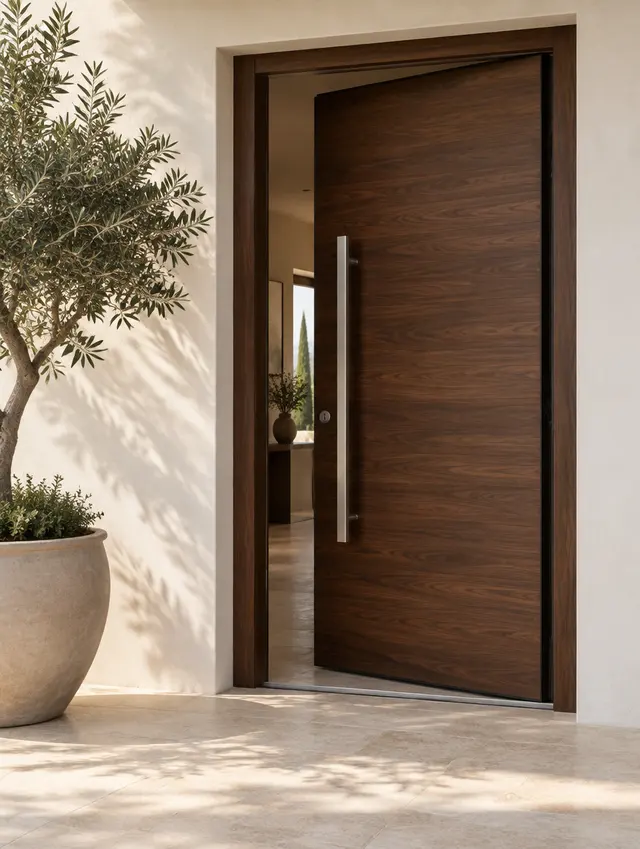
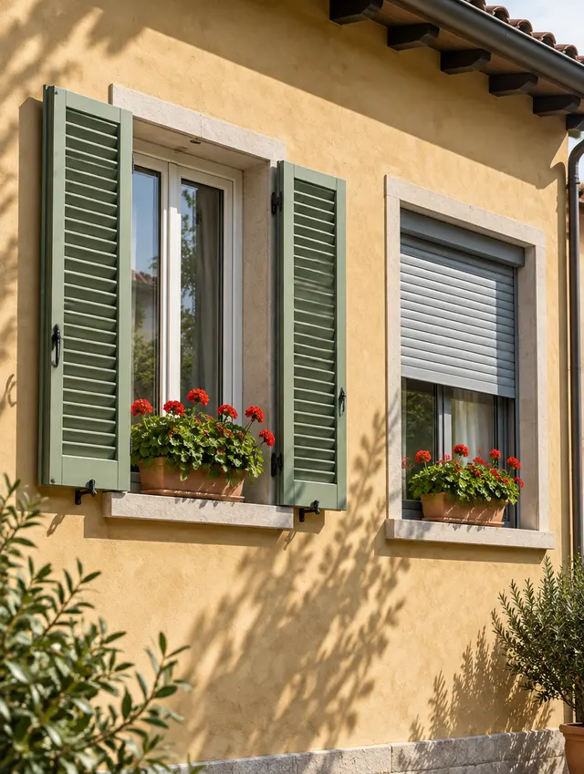
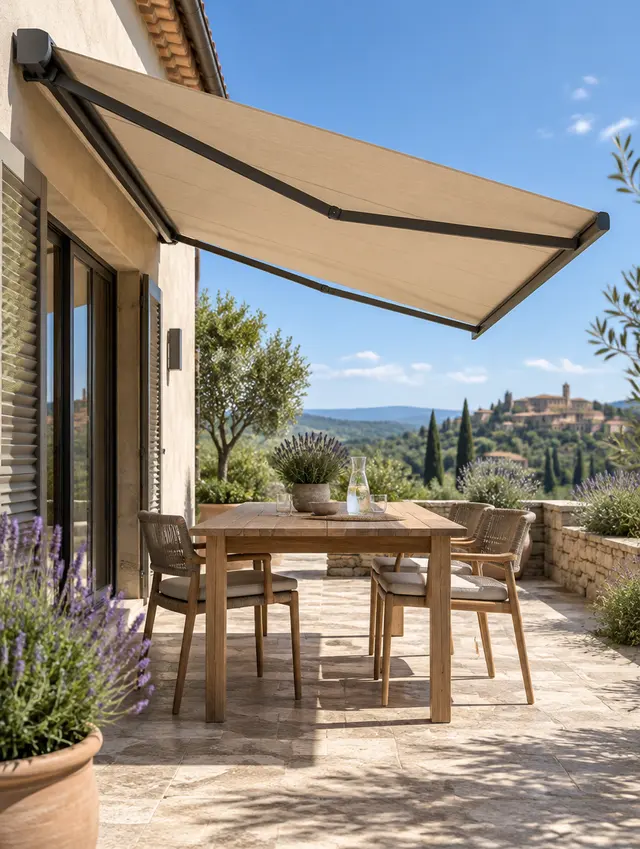
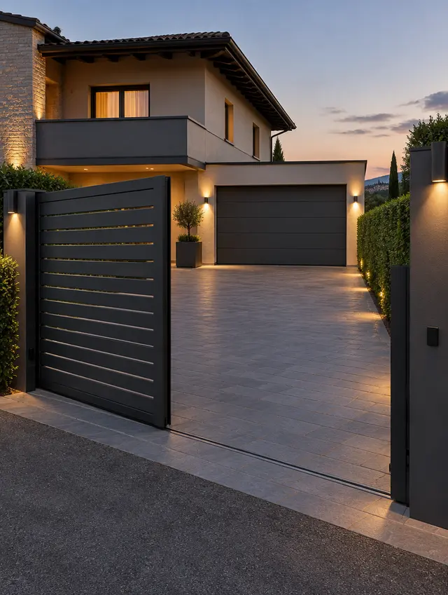
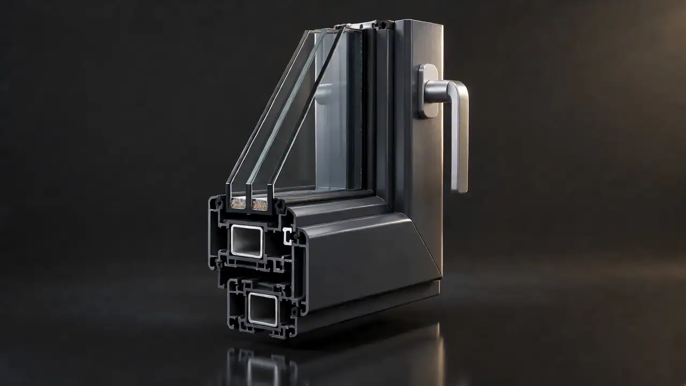
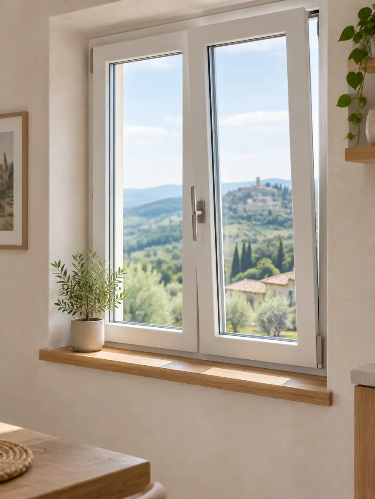
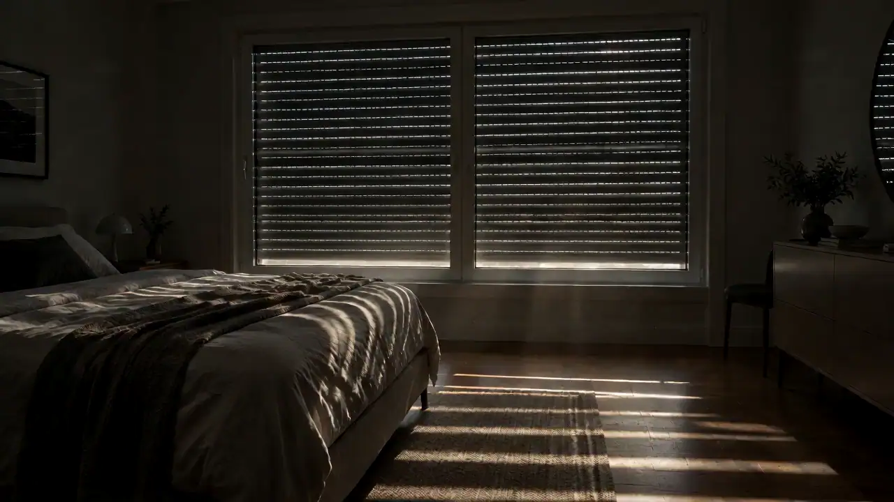
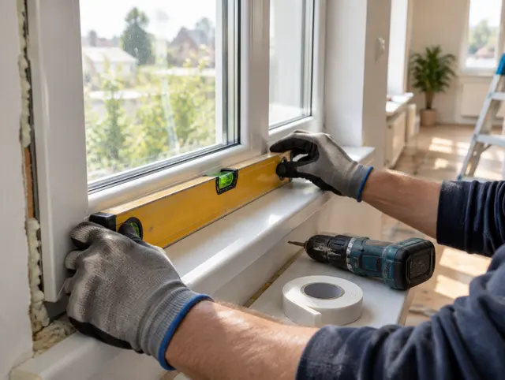

Serramentista a Voghera
Apri casaalla luce.
Tre Art Serramenti: finestre, porte e infissi su misura in PVC, alluminio e legno. Li forniamo e li montiamo noi.
- Consulenza gratuita
- Posa in opera
- Pratiche per le detrazioni
Più luce.
Più spazio.
Fuori il freddo.
Fuori il rumore.
Cosa facciamo
Tutto quello che apre, chiude e protegge casa tua.
-
01
Finestre e infissi
In PVC, alluminio o legno, su misura per ogni apertura: dalla sostituzione in appartamento alla casa nuova.
- PVC
- Alluminio
- Legno
-

02Scorrevoli e grandi vetrate
Porte finestre scorrevoli per aprire il soggiorno su terrazzo e giardino, con più luce e meno ingombro.
- Porte finestre
- Scorrevoli
-

03Porte blindate e da interno
La porta d’ingresso che protegge e isola, e le porte interne coordinate con lo stile della casa.
- Blindate
- Da interno
-

04Tapparelle e persiane
Per oscurare, proteggere e isolare: tapparelle e persiane abbinate ai nuovi serramenti o da sostituire.
- Tapparelle
- Persiane
- Serrande
-

05Tende da sole
Ombra su misura per balconi e terrazzi, per vivere gli spazi esterni anche nelle ore più calde.
- Balconi
- Terrazzi
-

06Automazioni
Automazione per cancelli e porte basculanti: apri e chiudi senza scendere dall’auto.
- Cancelli
- Basculanti

Dentro una finestra
Quello che non si vede fa la differenza.
- 01
Il telaio
Profili a più camere: è l’aria ferma al loro interno a fermare il freddo d’inverno e il caldo d’estate.
- 02
Il vetro
Vetrocamera a doppio o triplo vetro: più lastre e più intercapedini significano meno dispersioni e meno rumore.
- 03
Guarnizioni e ferramenta
Sono loro a chiudere davvero: tengono fuori spifferi e acqua e fanno muovere l’anta per anni senza giochi.
- 04
La posa
Il serramento migliore, montato male, isola come uno mediocre. Per questo la posa la facciamo noi.

Provala qui
Girala, aprila, cambia finitura.
Finitura PVC · Bianco
Apertura
PVC
Il più scelto per sostituire i vecchi infissi.
- Ottimo isolamento da freddo, caldo e rumore
- Non richiede verniciature né manutenzione
- Il miglior rapporto tra prestazioni e prezzo
Alluminio
Profili sottili, più vetro, più luce.
- Ideale per grandi vetrate e scorrevoli
- Resistente nel tempo, anche esposto al sole e alla pioggia
- Tante finiture e colori, linee moderne
Legno
Il calore di un materiale vivo.
- Isolante naturale, bello da vedere e da toccare
- Adatto a case d’epoca e centri storici
- Con la giusta cura dura generazioni
Modello dimostrativo: forme, misure e colori sono indicativi.

Buio
quando serve.
Luce
quando vuoi.
Tapparelle, persiane e tende da sole.
Oscuranti e protezioni solari abbinati ai tuoi serramenti, anche motorizzati.
Come lavoriamo
Dal primo sopralluogo all’ultima vite.
Un solo interlocutore dall’inizio alla fine: chi ti consiglia è lo stesso che poi viene a montare.

- 01
Consulenza gratuita
Ci racconti cosa ti serve: vediamo insieme materiali, aperture e soluzioni possibili.
- 02
Misure e preventivo
Rileviamo le misure e ti prepariamo un preventivo chiaro, voce per voce.
- 03
Su misura
I serramenti vengono realizzati sulle tue misure, non adattati.
- 04
Posa in opera
Li montiamo noi, con cura per la casa e per i dettagli che fanno la tenuta.
- 05
Detrazioni fiscali
Ti seguiamo nelle pratiche per le agevolazioni previste dalla normativa in vigore.
Preventivo gratuito
Dicci cosa ti serve. Bastano trenta secondi.
Scegli le voci qui accanto: si apre WhatsApp con il messaggio già scritto e ti rispondiamo noi. Nessun dato viene salvato sul sito.
Preferisci parlare? 0383 365641 · 333 2448811
Domande frequenti
Prima di chiamarci.
La consulenza e il preventivo sono gratuiti?
Sì. La consulenza è gratuita e senza impegno: ci dici cosa vuoi sostituire o installare e ti prepariamo il preventivo.
Meglio PVC, alluminio o legno?
Dipende dalla casa e da cosa cerchi. Il PVC isola molto bene e non chiede manutenzione; l’alluminio permette profili sottili e grandi vetrate; il legno è il più caldo e il più adatto alle case d’epoca. In consulenza ti aiutiamo a scegliere.
Vi occupate anche del montaggio?
Sì: forniamo e installiamo. La posa è la parte che fa davvero la differenza sulla tenuta di un serramento, per questo la curiamo noi.
Mi aiutate con le detrazioni fiscali?
Sì, ti assistiamo nelle pratiche. Percentuali e requisiti cambiano con la normativa: ti diciamo noi cosa è previsto nel momento in cui fai il lavoro.
Fate solo finestre?
No. Oltre a serramenti e infissi ci occupiamo di porte interne e blindate, scorrevoli, tapparelle, persiane, serrande, tende da sole e automazioni per cancelli e porte basculanti.
Dove siete?
A Voghera, in Strada Bobbio 20/B. Per sapere se lavoriamo nella tua zona chiamaci o scrivici su WhatsApp.
- Dove
- Strada Bobbio, 20/B
27058 Voghera (PV) - Telefono
- 0383 365641
333 2448811 - info@3artserramenti.it
- Orari
Chiamaci per orari e appuntamenti.